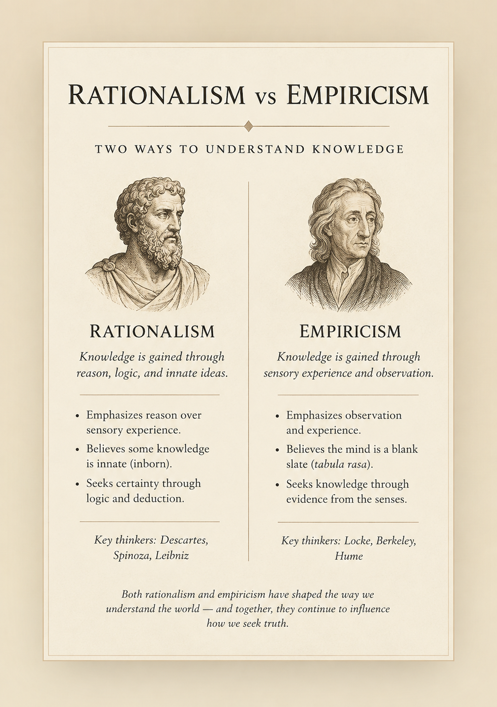

Mathematical reasoning
Mathematical proofs illustrate how conclusions can be derived through rational principles rather than by observing every physical instance.
Rationalism and empiricism are two major approaches to the philosophical study of knowledge. Rationalism gives reason and rational insight a central role, while empiricism gives experience and observation a central role in explaining how human beings acquire and justify knowledge.

Rationalism vs empiricism refers to a major debate in the philosophy of knowledge concerning the sources and limits of human knowledge. Rationalism gives a central role to reason and rational insight, particularly in explaining forms of knowledge that do not depend on particular sensory experiences. Empiricism, by contrast, gives a central role to experience, observation, and sensory engagement with the world.
The distinction became especially important in early modern European philosophy. Thinkers such as René Descartes, Baruch Spinoza, and Gottfried Wilhelm Leibniz are commonly associated with rationalism, while John Locke, George Berkeley, and David Hume are commonly associated with empiricism. Their actual positions were more sophisticated than a simple opposition between "reason" and "the senses."
Rationalism is a philosophical approach that gives reason a particularly important role in explaining human knowledge. Rationalist philosophers argue, in different ways, that some truths can be known or justified through rational thought rather than depending entirely on sensory experience.
Rationalism is closely connected with the concept of a priori knowledge. A priori knowledge is knowledge that can be justified independently of particular experiences of the senses. Mathematical and logical truths are often used when explaining the rationalist emphasis because their justification appears to depend on reasoning rather than on observing physical objects.
Early modern rationalists also debated whether the human mind possesses innate ideas, principles, or structures that are not simply copied from sensory experience. Descartes, Spinoza, and Leibniz developed different versions of rationalist philosophy, so rationalism should not be treated as one completely uniform doctrine.
Empiricism is a philosophical approach that gives experience a central role in explaining human knowledge. Classical empiricists emphasize observation, sensory experience, and the acquisition of ideas through engagement with the world.
Empiricism is closely connected with a posteriori knowledge, meaning knowledge whose justification depends on experience or empirical observation. Claims about particular physical objects, events, or measurable conditions generally require observation or evidence rather than deduction alone.
John Locke, George Berkeley, and David Hume developed influential forms of early modern empiricism. They disagreed with one another about perception, ideas, causation, substance, and the limits of knowledge. Consequently, empiricism is best understood as a family of related approaches rather than a single philosophical system.
The central difference between rationalism and empiricism concerns the role assigned to reason and experience in the formation and justification of knowledge. Rationalists emphasize the capacity of reason to provide knowledge or justification that is not dependent on particular sensory experiences. Empiricists emphasize experience as fundamental to knowledge of the world.
The contrast should not be reduced to the claim that rationalists "believe in reason" while empiricists "believe in experience." Both traditions use reasoning, and rationalists do not necessarily reject experience. The more precise disagreement concerns which kinds of knowledge can be established independently of experience, what experience contributes, and how far reason can take us beyond what experience supplies.
| Question | Rationalism | Empiricism |
|---|---|---|
| Primary emphasis | Reason, rational insight, and deduction | Experience, observation, and empirical evidence |
| Knowledge | Gives an important role to a priori knowledge | Gives an important role to a posteriori knowledge |
| Method | Deductive reasoning and rational analysis | Observation, experimentation, and empirical inquiry |
| Innate ideas | Some rationalists defend innate ideas or innate cognitive principles | Classical empiricists generally reject innate ideas in the rationalist sense |
| Role of senses | Important but potentially limited or fallible | Central to acquiring knowledge about the experienced world |
| Typical model | Mathematical or deductive reasoning | Observation and empirical investigation |
| Representative thinkers | Descartes, Spinoza, Leibniz | Locke, Berkeley, Hume |
Rationalism examples are easiest to understand when considering cases in which reasoning appears capable of establishing a conclusion without first observing the relevant physical situation. Mathematics provides a familiar illustration. A person can establish a geometrical conclusion through a proof without measuring every possible triangle in the physical world.
Another example is deductive reasoning. If the premises of a valid deductive argument are accepted, its conclusion follows by virtue of the logical structure of the argument. The rationalist tradition uses such cases to investigate whether some knowledge depends fundamentally on rational principles rather than sensory observation.
Descartes's method provides another important historical example. In the Meditations, he searches for a foundation of knowledge that cannot be undermined by doubt. His famous argument concerning the thinking self illustrates his attempt to establish certainty through rational reflection rather than relying simply on sensory perception.
Mathematical proofs illustrate how conclusions can be derived through rational principles rather than by observing every physical instance.
Deduction illustrates the role of logical relationships in deriving conclusions from accepted premises.
Descartes's philosophical method illustrates an attempt to find secure knowledge through systematic rational reflection.
Empiricism examples generally involve claims whose justification depends on observation or experience. If a person wants to know whether a particular object is hot, one possible approach is to measure its temperature. The relevant knowledge concerns an empirical condition of the physical world and therefore requires evidence from experience.
Scientific investigation provides another familiar example. Scientists observe phenomena, collect measurements, formulate hypotheses, conduct experiments, and compare results with predictions. Reason is essential to this process, but empirical evidence plays a central role in determining whether claims about the observed world are supported.
Classical empiricists also investigated how ideas arise in the mind. Locke famously rejected the theory that the mind begins with a stock of fully formed innate ideas and instead emphasized the role of experience in the development of human understanding. Berkeley and Hume developed further analyses of perception, ideas, and experience.
Learning about a particular physical object or event normally requires observation or some other form of experience.
Measuring temperature, distance, mass, or other physical properties provides empirical evidence about the world.
Controlled experiments test hypotheses by comparing expectations with observed results.
The distinction between a priori and a posteriori knowledge is essential for understanding the rationalism and empiricism debate. The terms describe different relationships between knowledge and experience. They do not simply mean "rational" and "empirical," although the concepts are closely connected with those traditions.
A priori knowledge is knowledge that can be justified independently of particular sensory experience. Mathematical and logical propositions are commonly discussed in this context. A person does not need to inspect every physical object in order to understand a mathematical proof.
A posteriori knowledge depends on experience or empirical observation for its justification. Knowing that it is raining outside, for example, requires information about the particular conditions outside rather than deduction alone.
The rationalism vs empiricism debate can be represented as a question about two major routes through which philosophers explain knowledge. The diagram below is a simplified conceptual map. It does not mean that rationalists reject experience or that empiricists reject reason.
Reason and rational principles can provide knowledge or justification that is not dependent on particular sensory experiences.
Experience and observation provide essential evidence for knowledge, particularly knowledge concerning the empirical world.
Important: These are tendencies rather than absolute divisions. Reason is used in empirical inquiry, and rationalist philosophers can recognize that experience provides important information about the world.
The rationalist and empiricist traditions developed through several philosophers whose theories differ substantially. The labels are useful for understanding broad historical patterns, but individual thinkers should not be reduced to a single doctrine.
Descartes developed a foundational approach to knowledge based on methodical doubt and rational certainty. His philosophy is one of the major sources of early modern rationalism.
Spinoza developed a highly systematic philosophy in which reason and deduction play a central role in understanding reality, God, nature, and human freedom.
Leibniz defended important forms of rationalism and argued for distinctions between different kinds of truths, including truths of reason and truths of fact.
Locke developed an influential empiricist account of the human understanding, emphasizing experience and rejecting a theory of fully formed innate ideas.
Berkeley developed an idealist philosophy centered on perception and challenged conventional assumptions about material substance.
Hume developed a rigorous empiricist analysis of impressions, ideas, causation, induction, and the limits of human knowledge.
The rationalism vs empiricism debate became particularly prominent during the early modern period, when European philosophers were reconsidering traditional approaches to knowledge, science, mathematics, religion, and nature. The development of modern science created new questions about the relationship between mathematical reasoning, observation, and knowledge of the physical world.
Rationalist philosophers sought secure principles through reason and systematic argument. Empiricist philosophers investigated the contribution of sensation and experience to human understanding. Their disagreements concerned not only the source of knowledge but also the limits of certainty, the nature of ideas, causation, substance, and the scope of human understanding.
Descartes developed a method of philosophical inquiry centered on systematic doubt and the search for secure foundations of knowledge.
Spinoza and Leibniz developed sophisticated rationalist systems concerning reality, reason, necessity, substance, and the structure of knowledge.
Locke's Essay Concerning Human Understanding examined the origins and limits of human understanding through an emphasis on experience.
Berkeley and Hume developed increasingly sophisticated empiricist analyses of perception, ideas, causation, and the limits of knowledge.
Kant's Critique of Pure Reason responded to problems raised by both rationalist and empiricist traditions and developed a theory in which experience and a priori cognition both have essential roles.
Immanuel Kant developed one of the most important responses to the rationalism and empiricism debate. He argued that knowledge requires both sensory experience and structures or concepts contributed by the mind. His approach therefore cannot simply be classified as choosing one side over the other.
Kant famously argued that human knowledge begins with experience but does not necessarily arise entirely from experience. Sensory information supplies material for cognition, while the mind's forms and concepts help organize that information into coherent experience.
This approach transformed the earlier debate. Instead of asking only whether knowledge comes from reason or experience, Kant investigated the conditions that make knowledge and experience possible in the first place. His philosophy became a major turning point in modern epistemology and metaphysics.
Although rationalism and empiricism are often presented as opposing traditions, they share several important features. Both are concerned with the possibility, sources, justification, and limits of human knowledge. Both also use philosophical reasoning to investigate what human beings can legitimately claim to know.
Rationalists can recognize the importance of experience for discovering facts about the empirical world. Likewise, empiricists cannot conduct philosophical or scientific inquiry without reasoning, conceptual analysis, and logical inference. The historical debate is therefore better understood as a disagreement about the foundations and limits of knowledge than as a simple choice between thinking and observing.
Both traditions ask how human beings acquire, justify, and limit their claims to knowledge.
Empirical investigation requires reasoning to interpret evidence, formulate hypotheses, and draw conclusions.
Both traditions raise questions about whether human knowledge can be certain and what makes a belief justified.
Neither rationalism nor empiricism represents one completely uniform philosophical position.
The rationalism vs empiricism distinction is useful, but simplified descriptions can create misleading impressions about the philosophers involved. The historical traditions contain significant differences and cannot always be placed into two perfectly separated categories.
This is too strong. Rationalist philosophers can recognize the importance of sensory experience while arguing that some knowledge cannot be reduced to sensory experience.
This is also misleading. Empiricists use reasoning extensively in analyzing experience and drawing conclusions from evidence.
A priori and a posteriori are epistemological distinctions. They are closely related to the historical debate but do not simply identify two philosophical schools.
Kant's project was more complicated. He attempted to explain how experience and a priori cognition jointly contribute to human knowledge.
Rationalism faces questions about how reason can establish substantive knowledge about reality without relying on experience. Critics may ask whether apparently rational principles genuinely provide information about the world or whether some supposedly innate or a priori principles depend on assumptions that require further justification.
Empiricism faces a different set of difficulties. Sensory experience can provide information about particular cases, but philosophers have questioned how experience can justify universal conclusions. Hume's analysis of induction is especially important: repeated observations do not appear to provide a purely logical guarantee that the same pattern will continue in the future.
The debate therefore reaches beyond the simple question of whether reason or experience is more important. It concerns the relationship between evidence, concepts, inference, certainty, perception, and the conditions under which a belief becomes knowledge.
Rationalism is a philosophical approach to knowledge that gives reason and rational insight a central role, especially in explaining forms of a priori knowledge.
Empiricism is a philosophical approach to knowledge that gives experience and observation a central role, especially in explaining a posteriori knowledge.
Rationalism gives reason and rational insight a central role in explaining knowledge, especially a priori knowledge, while empiricism gives experience and observation a central role, especially in explaining a posteriori knowledge.
Examples associated with rationalist approaches include using deductive reasoning to establish mathematical conclusions and arguing that some knowledge can be justified independently of particular sensory experiences.
Examples associated with empiricist approaches include learning about the physical world through observation, measurement, experimentation, and sensory experience.
A priori knowledge is knowledge that can be justified independently of particular sensory experience. Mathematical and logical reasoning are commonly discussed as examples of a priori knowledge.
A posteriori knowledge is knowledge that depends on experience or empirical observation for its justification.
René Descartes, Baruch Spinoza, and Gottfried Wilhelm Leibniz are commonly associated with early modern rationalism.
John Locke, George Berkeley, and David Hume are commonly associated with early modern empiricism.
Kant developed a philosophical account in which both sensory experience and a priori structures of cognition play important roles in human knowledge, responding to problems raised by both rationalist and empiricist traditions.
No. The contrast is useful for understanding early modern epistemology, but the two traditions are not complete opposites. Rationalists can recognize the importance of experience, and empiricists can recognize the importance of reasoning.
The rationalism vs empiricism debate is important because it addresses one of the central questions of epistemology: how human beings can acquire and justify knowledge. Rationalist philosophers emphasize the capacity of reason to establish knowledge or justification independently of particular sensory experiences, while empiricist philosophers emphasize the foundational role of experience and observation.
The distinction became particularly influential in early modern philosophy through thinkers such as Descartes, Spinoza, Leibniz, Locke, Berkeley, and Hume. Their disagreements extended beyond the simple question of reason versus experience to deeper problems involving certainty, perception, innate ideas, causation, induction, mathematics, and the limits of human understanding.
Kant's philosophy transformed the debate by investigating how sensory experience and a priori structures of cognition contribute to knowledge. The continuing importance of the debate lies in the questions it raises about evidence, reasoning, perception, certainty, and the conditions under which human beings can claim to know something.